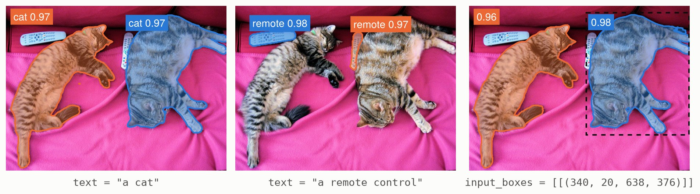

Segmenting objects
SAM 3, Meta's Segment Anything Model 3, finds and segments the objects of an image that a prompt describes: a short text, such as "a cat", or boxes around examples of the objects. Metalhead ports the detector of transformers' SAM 3 and its processor, which prepares the images and prompts, and turns the outputs of the model into scores, boxes and masks.

SAM 3.1 on a photograph of COCO, prompted with two texts and with a box (dashed), at a threshold of 0.5. A box is an example: SAM 3 finds the objects like it, here both cats.

Set up
using Pkg
Pkg.add(["Metalhead", "FileIO", "ImageIO", "ImageCore", "HuggingFaceTokenizers"])using Metalhead, FileIO, ImageCore, HuggingFaceTokenizers
using Downloads: download
model = create_model("unsloth/sam3.1") # SAM 3.1; SAM 3: "jetjodh/sam3"
proc = create_processor("unsloth/sam3.1")Both repositories are ungated: jetjodh/sam3 holds the same weights as Meta's gated facebook/sam3. Only the detector of SAM 3's video model is ported, not its tracker of objects across the frames of a video. Prompts need the tokenizer of the repository, which create_processor loads after using HuggingFaceTokenizers; without it, the processor prepares the images only.
Text prompts
The processor resizes the image to the 1008 × 1008 pixels of the model, and pads the prompt to 32 tokens:
img = load(download("http://images.cocodataset.org/val2017/000000039769.jpg")) # 640 × 480
inputs = proc(; images = img, text = "a cat")
size(inputs.pixel_values) # (1008, 1008, 3, 1)
outputs = model(inputs)post_process_instance_segmentation keeps the objects whose score is above threshold, with their boxes and masks at the size of the image, target_sizes:
inputs.original_sizes # ((height = 480, width = 640),)
objects = only(post_process_instance_segmentation(proc, outputs; threshold = 0.5,
target_sizes = inputs.original_sizes))
objects.scores # [0.965, 0.970]
objects.boxes # 4 × 2: the (x1, y1, x2, y2) of each cat, in pixels
size(objects.masks) # (640, 480, 2): width × height × objects
mask = Metalhead.image_matrix(objects.masks[:, :, 1]) # 480 × 640, as `img`Sizes are (; height, width), as the processor gives them; target_sizes also takes (height, width) tuples. The masks, like the arrays of the models, are width × height: Metalhead.image_matrix turns one into a height × width image of Gray pixels, as FileIO loads images.
The score of an object is the probability of its query times that of the presence of the prompt in the image. post_process_object_detection returns the scores and boxes only, and post_process_semantic_segmentation a single mask of the objects of each image, with its probabilities.
A vector of images makes a batch, with a vector of prompts, one for each image, and the post-processing returns the objects of each image.
Box prompts
A box prompt is (x1, y1, x2, y2) in the pixels of its image, a vector of them for each image. A box is an example of the objects to find, not a selection: around the cat on the right, it finds both cats, with scores of 0.977 and 0.960.
inputs = proc(; images = img, input_boxes = [[(340, 20, 638, 376)]])
objects = only(post_process_instance_segmentation(proc, model(inputs); threshold = 0.5,
target_sizes = inputs.original_sizes))Without text, boxes have the text "visual", as in transformers, and they combine with a text too. input_boxes_labels labels each box as a positive example (1, the default) or a negative one (0). See Sam3Processor for the inputs it takes and the arrays it returns.
On a GPU
Move the model and its inputs to the GPU; original_sizes stays on the CPU, for the post-processing:
using CUDA, cuDNN
device = gpu_device()
model = device(model)
outputs = model(device(inputs))